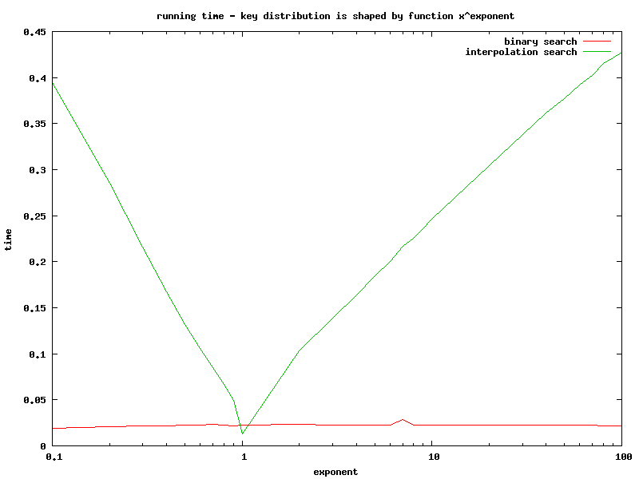
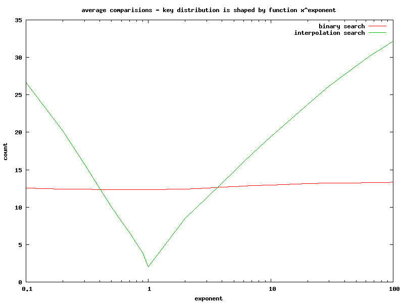
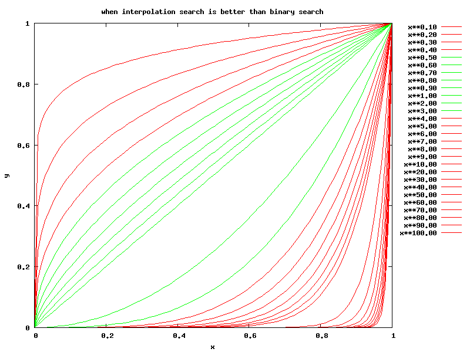

| Author: | Wojciech Muła |
|---|---|
| Added on: | 2014-09-25 |
Contents
Interpolation search is the modification of binary search, where the index of a "middle" key is obtained from linear interpolation of values at start & end of a processed range:
a := start
b := end
key := searched key
while a <= b loop
t := (key - array[a])/(array[b] - array[a])
c := a + floor(t * (b - a))
-- in binary search just: c := (a + b)/2
if key = array[c] then
return c
else if key < array[c] then
b := c - 1
else
a := c + 1
endif
end loop
The clear advantage over basic binary search is complexity O(loglogn). When size of array is 1 million, then average number of comparison in binary search is log2n = 20. For interpolation search it's log2log2n = 4.3 — 4.5 times faster.
However, this property is hold only when the distribution of keys is uniform. I guess this the reason why the algorithm is not well known — enforcing uniform distribution on real data is hard. Also calculating the index c is more computational expansive.
In the experiment array of integers was filled with ascending numbers scaled by function indexexponent, modelling different distributions. Size of array was 10'000 or 100'000 elements and exponent vary from 0.1 to 100.
Then every key in range 0 .. array size was searched using both binary and interpolation algorithm. Two values were measured:
Test programs were run on quite old Pentium M, floating point calculations were done on FPU (I've tried also SSE, but improvement was minimal or none).
Clock time in function of exponent value.
Average comparisons in function of exponent value.
Functions xexponent — green curves are distributions for which interpolation search is better than binary search.
Conclusion: keep away from interpolation search unless you can prove that your data has uniform distribution.
Sample programs are available at github.